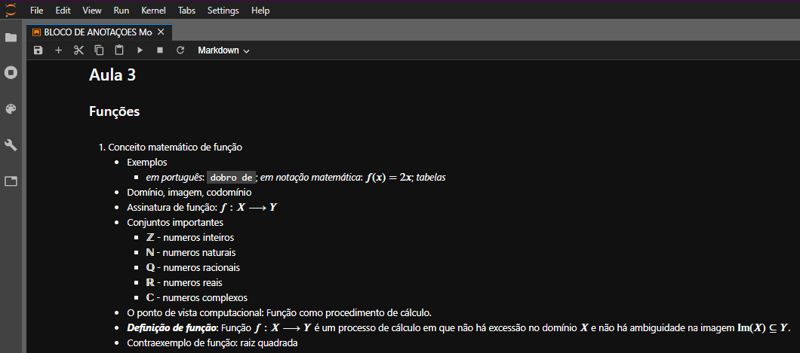
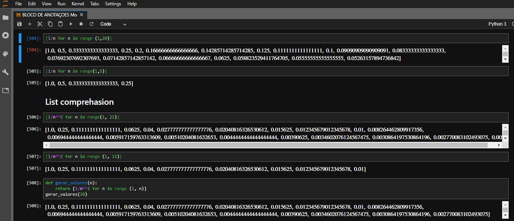

Na matéria de Modelagem de Fenômenos Físicos o intuito é trabalharmos com funções matématicas, bem como a matemática como um todo, utilizando o Anaconda Navigator e o Jupyter Lab para anotações e estudo das fórmulas e regras. Nessa matéria tivemos apenas um Trabalho Discente Efetivo que consistia em enviar para o professor nossas anotações feitas no Jupyter Lab durante o primeiro semestre.
(POR QUESTÕES PRÁTICAS MOSTRAREI OS CÓDIGOS SELECIONADOS EM FORMAS DE FOTOS)
 